this is how we do it
Scroll to know more
1 Project
The panorama of social media is larger
than what you think: it includes a lot of alternatives to the most famous and popular ones.
Alternative social media offer an option to precise issues.
These platforms came about as a result of different needs to break away from the
mainstream ones.
Whether we talk about censorship, privacy policies, free speech or real connections, you can find a
huge amount of social media where all
these themes are discussed.
The aim of the whole research is to make it possible to understand the values of alternatives social media. The analysis focuses on
words and expressions
used by these new social media to self-determine themselves and from those used by their .
In doing so we had to focus more on quality over quantity.
And that was hard! We had to extract
different shades of meaning from each description in order to map out argument of discussions. From the analysis three main and different protocols emerged.
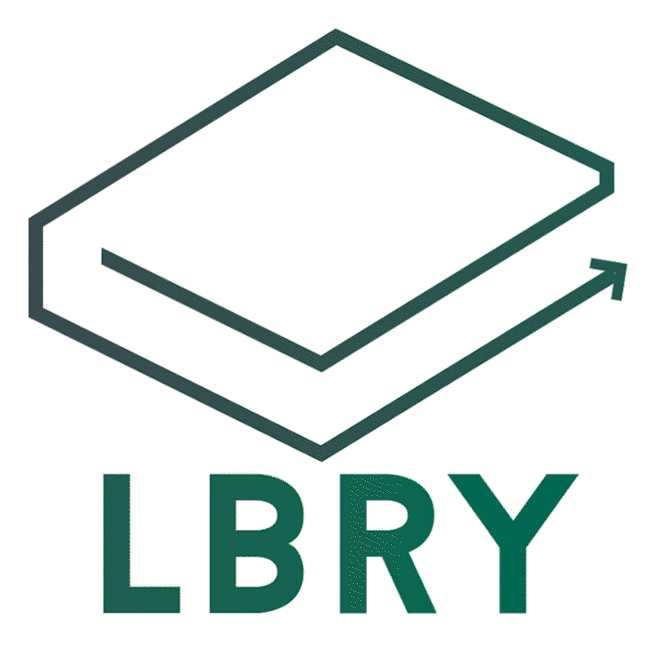
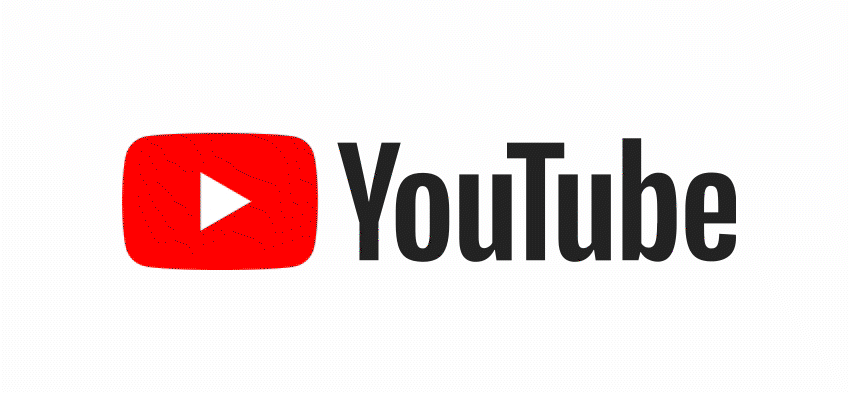
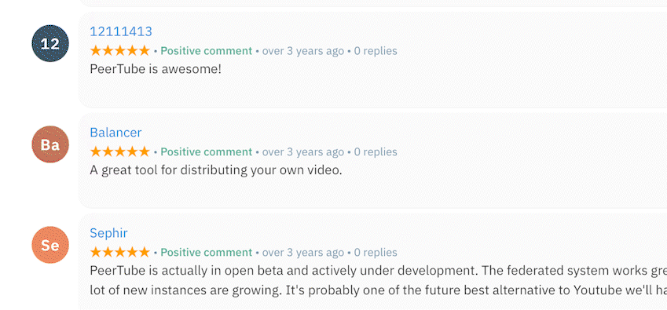
2 Research
First Protocol
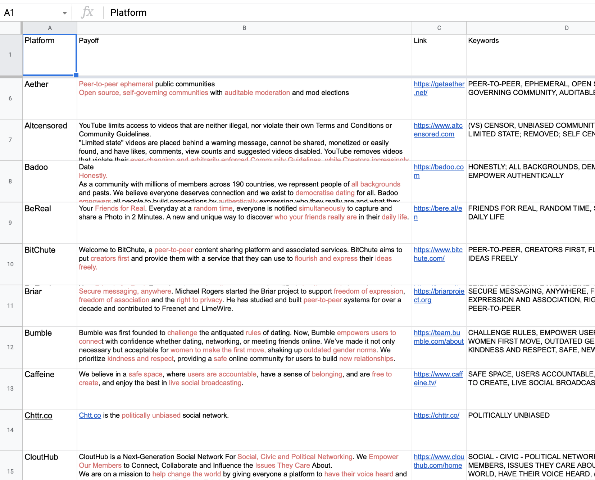
1st step/ We collected all the payoff from the 87 social media platform
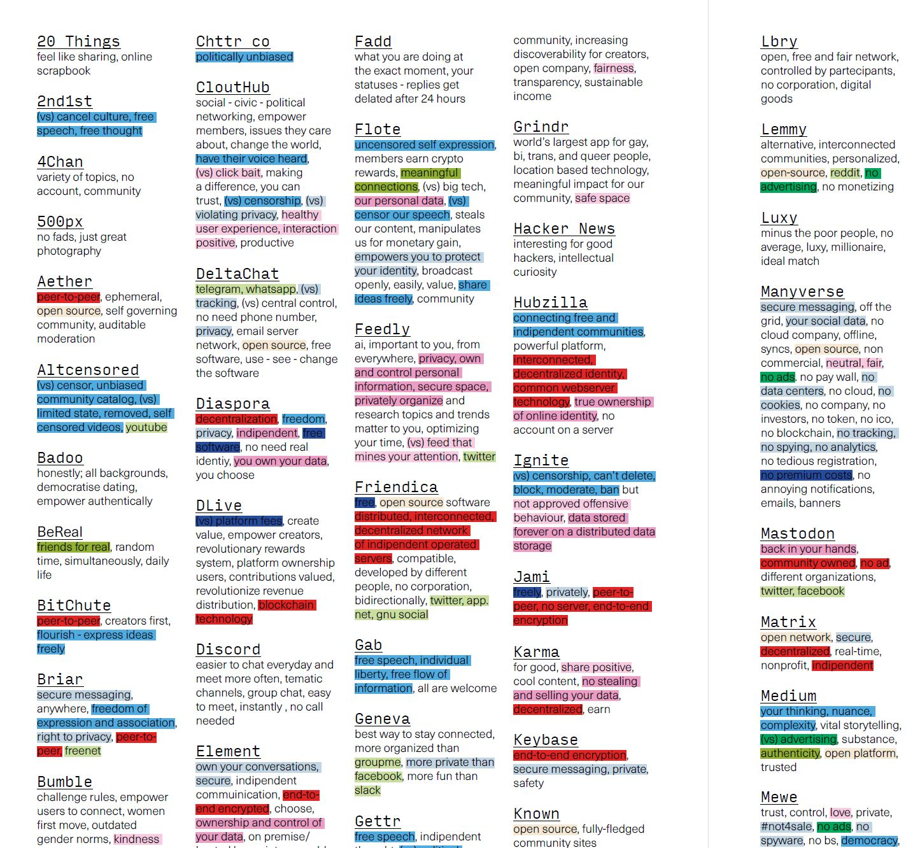
2nd step/ We extracted the most qualitative keywords in order to understand the main themes
3rd step/ We organized the keywords in the ten different clusters found in the previous analysis
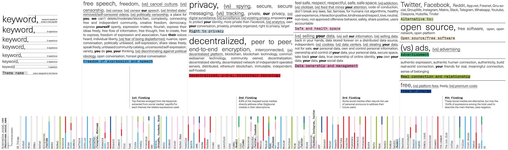
Second Protocol
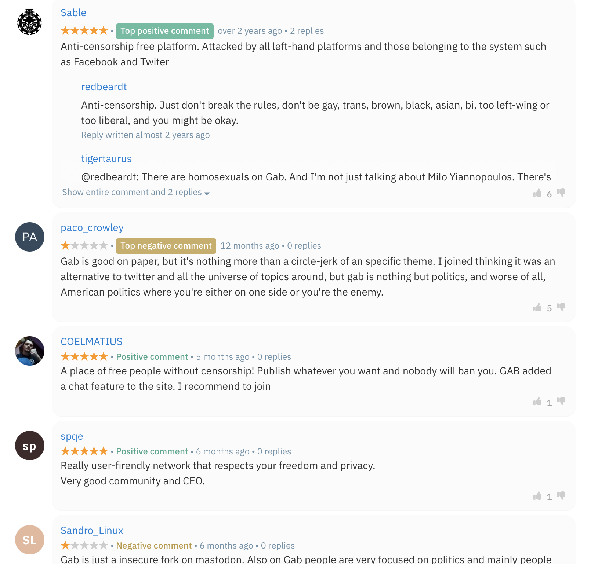
1st step/ We have collected the social media alternative users reviews from the app with enough qualitative comments
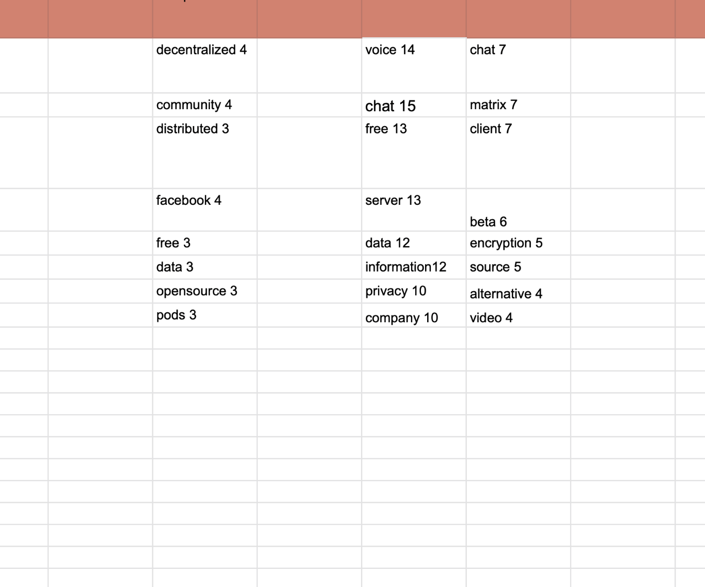
2nd step/ We have depicted the most frequent keywords from each app
3rd step/ We have visualized the app based on the number of comments and we discovered the most important and peculiar themes according to all apps keywords
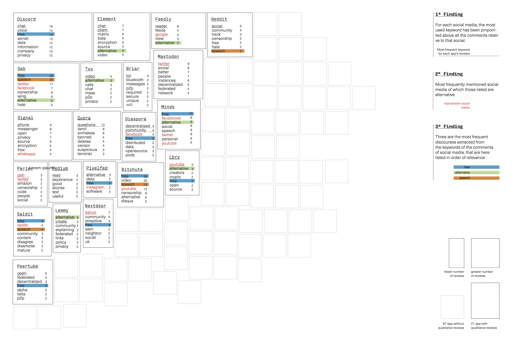
Third Protocol
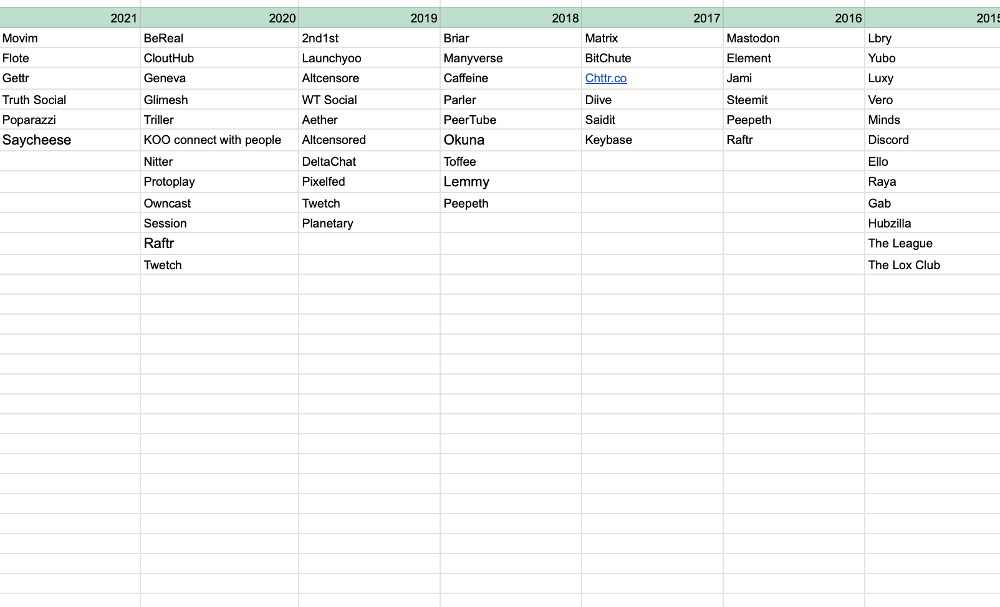
1st step/ We have found all the alternative social media date of birth
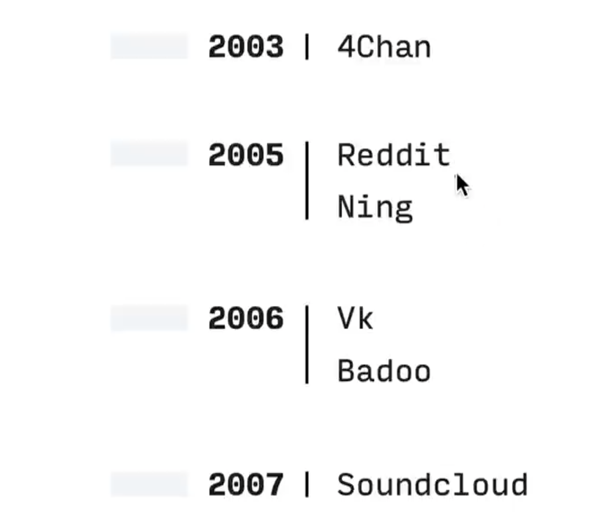
2nd step/ We have put them in chronological order and we have crossed them with the four main topics found in the first protocol
3rd step/ We found correlations and trends between topics and years
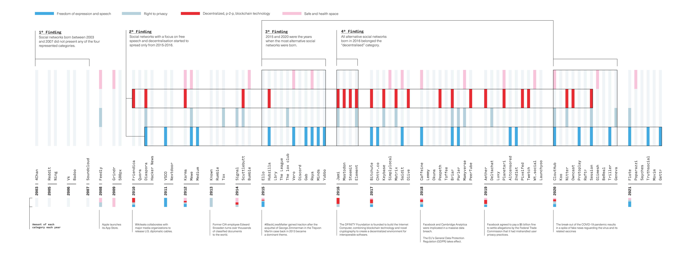
3 Output
In this website we wanted social media platforms to
talk for themselves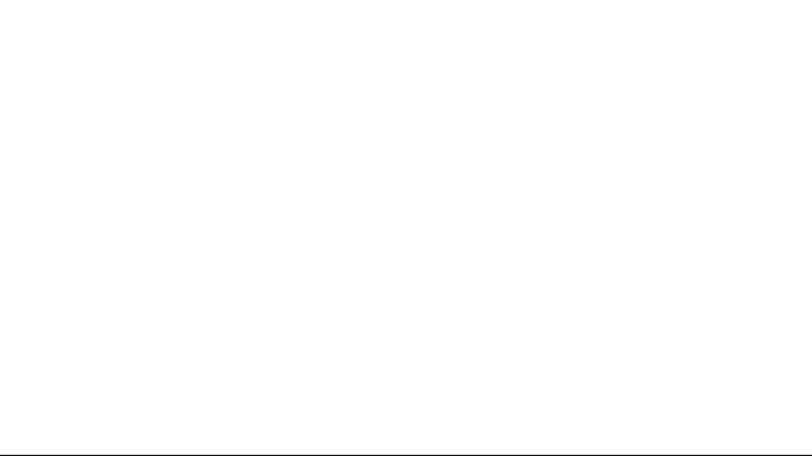.
The aim of this project is to make people aware of the auto definition of alternative social media through expressions and adjectives used to declare their values and
cores:
an auto narration through their own words.
We decided to use words as the primary source of our research because they are the most self-representative way for these socials to describe themselves.
Moreover, their qualitative nuances allowed us to study
in depth the different themes emerged.
The website wants to resemble the idea of the archive.
A systematic collection of names of alternative social websites in which people can read self-descriptions and reciprocal
c
o
n
n
e
c
t
i
o
n
s
in respect to the themes found during the research.
The objective is to echo the voice of alternative social media from which emerges a categorization by themes.
The recurring and repeated presence of these themes within the payoffs of the analysed sites is an index of the importance of these social issues discussed in the digital
world today.